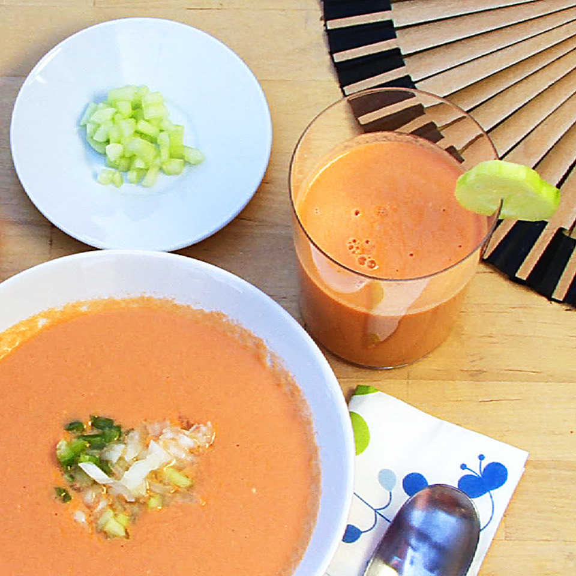

Return to main page
Gazpacho

What's better on a hot summer's day than a classic chilled gazpacho?
Serve this traditional Spanish gazpacho chilled in a glass or a bowl.
You can also serve in shot glasses for an easy, make-ahead summer appetizer!
Ingredient Checklist
- 2 pounds tomatoes, peeled and halved
- 1 cucumber, peeled and sliced
- 1 green bell pepper, sliced
- ½ onion, sliced
- 1½ tablespoons red wine vinegar
- 1 clove garlic
- Salt to taste
- ¼ cup extra-virgin olive oil
- ¼ cup cold water, or as needed
Garnish :
- ½ onion, chopped
- 1 green bell pepper, chopped
- 1 cucumber, chopped
Recipe instructions
- Combine tomatoes, cucumber, bell pepper, onion, vinegar, garlic, and salt in the bowl of a food processor; pulse until blended. Pour olive oil in slowly, with the processor running, until gazpacho is smooth. Add small amounts of cold water as needed to achieve desired consistency.
- Serve gazpacho chilled with chopped onion, bell pepper, and cucumber sprinkled over each serving.
Return to main page